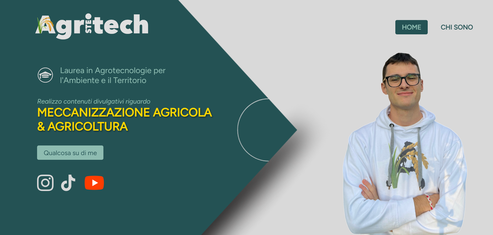

Sono uno studente di Informatica all'università, vivo a Novara e ho una grande passione per la tecnologia e l'informatica. La mia curiosità e il desiderio di imparare mi spingono a esplorare continuamente nuovi ambiti e a espandere le mie conoscenze. Credo fortemente nella condivisione del sapere e mi piace discutere delle scoperte e delle innovazioni che trovo interessanti. Sono entusiasta di poter contribuire alla comunità tecnologica e scoprire insieme le meraviglie del mondo digitale.
Sviluppatore e Designer
Fondendo creatività e abilità tecniche, trasformo le tue visioni in realtà, con un tocco di innovazione e un pizzico di stile!



SteAgritech
Sito Web
Sito web per un content creator che crea contenuti sull'agricoltura. Realizzato in HTML e CSS.
Visita il progettoChi sono
In cosa sono specializzato
Ho parecchie conoscenze per quanto riguarda i numerosi linguaggi di programmazione, tra i quali C, C++; C#, Cobol, PHP, java e molti altri.
Ho soprattutto una buona conoscenza per quanto riguarda l'utilizzo di HTML, CSS e JavaScript che mi permette di realizzare siti che possono soddisfare le richieste di chiunque. Mi piace mettermi alla prova per realizzare un prodotto finito, e curato sopratutto nella sua UI e UX.
Programmazione
Database
Server
Web Development
Web Design